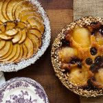
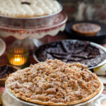

|
 |
 |  |
Különlegességek
Desszertek |
Ünnepi kenyér |
Tökös piteKlasszikus sütőtökös pite, krémes tök töltelékkel és éppen megfelelő mennyiségű fűszerrel, dekadens karamellás tejszínhabbal készítve. 3 hüvelykes egyedi vagy 8 hüvelykes egész pitékben kapható |
Briós tekercsKlasszikus, vajas briós tekercsünk - tökéletes vacsorára, reggelire, vagy akár csúszkás vagy szendvicses zsemleként. |
Pekandiós piteŐszi klasszikus pekándió gazdag, édes pudingban. 3 hüvelykes egyedi vagy 8 hüvelykes egész pitékben kapható |
Pioneer RollsGyengéd, vajas, széthúzható vacsora. |
Csokoládé pekándióA töltelékben házi készítésű csokoládéval töltött hagyományos pekándió pite, meleg, gazdag kakaó ízekkel. 3 hüvelykes egyedi vagy 8 hüvelykes egész pitékben kapható |
StollenA klasszikus változatunk - sűrű kenyér kandírozott mandulával, mazsolával, áfonyával és kandírozott narancshéjjal, marcipán közepével, rumvajba mártva, szerves porcukorba tekerve. Gazdag, zamatos kiegészítés a reggelihez vagy a villásreggelihez, vagy egyszerűen egy szeletként egy csésze kávé vagy tea mellé. Szelet vagy egész cipó formájában kapható |